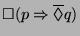
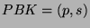
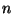
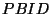
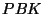

IP Version 6
Protocol IPv6-RADIUS (40), defined in [7], uses RADIUS for the purposes of authentication, authorization and accounting in IPv6-enabled networks. Known security vulnerabilities of the RADIUS protocol are described in [76,162,161].
Protocol IPv6-RADIUS should provide Fresh Key Agreement and 3P-Authorization (G1-3,6,7,10,12).
Protocol IPv6-cga (41) is intended to solve one of the most difficult security related problems that arose during the design of IPv6, know as the address ownership problem. Since a node is able to autoconfigure its own IPv6 address (see [183]), the question is: ``how does a node prove that it is allowed to use this IP address, and that it does not belong for instance to another node?'' Cryptographically generated addresses (CGA) are IPv6 addresses where the interface identifier is generated by hashing the address owner's public key. The address owner can then use the corresponding private key to assert address ownership and to sign messages sent from the address without any additional security infrastructure, [22] (for more details and variants, see also [23] and [103]).
Protocol IPv6-cga should provide Sender Invariance (G16).
A similar problem is the Secure Neighbor Discovery Problem. [136] discusses the IPv6 Neighbor Discovery trust models and threats. The original solution to the problem was given in [128]. Protocol send-cga (42) is a protocol that uses Cryptographically Generated Addresses to secure the Neighbor Discovery for IP Version 6 (IPv6). Three variants of the send-cga have been proposed: [137] (cga header), [24], and [97] (Securing IPv6 Neighbor Discovery Using Address Based Keys (ABKs)).
Protocol send-cga should provide Sender Invariance (G16).
Protocol HIP (43) Host Identity Protocol (see [124,123,135]) proposes a solution for separating the end-point identifier and locator roles of IP addresses. It introduces a new Host Identity (HI) name space, based on public keys. The public keys are typically, but not necessarily, self generated, as in the cga approach.
The HIP protocol permits IPv6 and IPv4 hosts to identify each other based on the public keys, to establish a pair of host-to-host ESP security associations using these public keys, and to run both IPv4 and IPv6 applications side-by-side independent of the underlying type of connectivity. It also allows many IPv4 applications to communicate directly with IPv6 applications, and vice versa.
Protocol HIP should provide Fresh Key Agreement, PFS, DoS Resilience (G1-3,7,9,10,12,15).
Protocol pbk (44), Purpose-Built Keys, proposed in [41], is a two party protocol, played by a sender, Alice, and a receiver, Bob. Alice and Bob have no direct or indirect security relationship that they can use to perform an authenticated key agreement. This basically means that Alice and Bob do not both have secure channels to a common trusted party, that they do not both have access to a common security infrastructure, like a global PKI, and moreover, that they do not share a common shared secret and they have no knowledge of the correct binding of public keys to their respective identities. In this situation, any communication between Alice and Bob may be manipulated by an active attacker without Alice or Bob noticing it. Now let us suppose that at the beginning of an association between two parties an initial transaction has not been tampered with. In this case, future transactions can be secured, providing Bob with assurance that the source is the same one that started the communication, although the actual identity of Alice is not important to Bob.
The PBK framework may be explained as follows: Before Alice initiates sending a set of packets to Bob, Alice constructs a public/private key pair  for use later while sending packets. This is known as a Purpose Built Key Pair. Alice then creates a Purpose Built ID  by performing a cryptographic hash of , the public part of . This will be used as a pseudonymous identity for Alice. The value is sent along with the initial packets and each packet is signed using , the private part of the . At some point or another (we may assume, without loss of generality, that this happens also during the initial set up of the conversation) Alice also discloses the public key to Bob. Bob is able to verify that the hash of is and that the messages are signed with the secret key corresponding to . Thus Bob is assured that the messages were sent by the same node that started the conversation. If replay protection is necessary, a nonce value (a monotonically increasing value) or time-stamp may be included with the message itself.
With luck, that is, if no active attacker tampered with the first exchanges of the communication, is indeed the Purpose Built Identity created by Alice. Otherwise, was constructed by an attacker, in which case he may play a man in the middle attack.
Protocol pbk provide Sender Invariance.